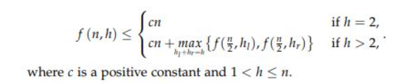
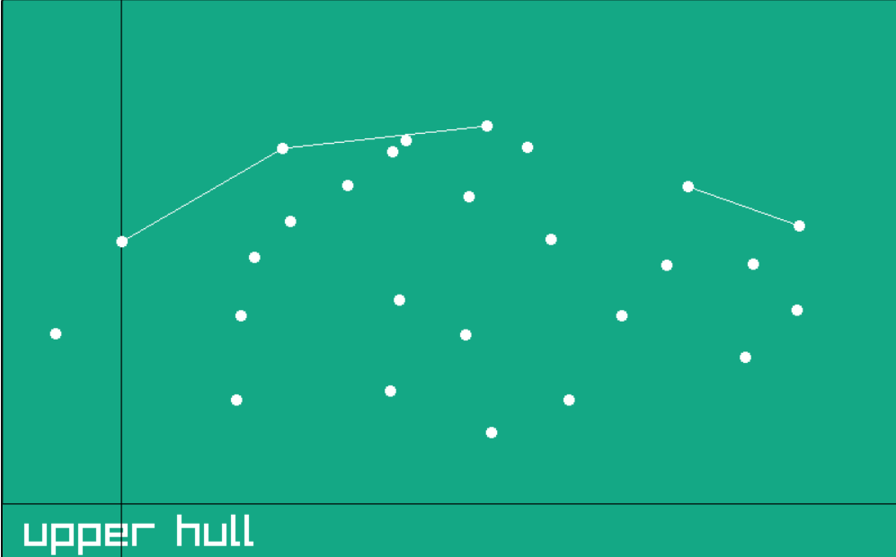

|
Kirk Patrick Seidel (Q2)
Kirk Patrick Seidel Algorithm
|

|
|
Kirk Patrick Seidel (Q2)
Kirk Patrick Seidel Algorithm
|
|
The Kirkpatrick-Seidel Algorithm, often abbreviated as KPS Algorithm, is a method used to compute the convex hull of a set of points in the plane. The convex hull of a set of points is the smallest convex polygon that encloses all the points in the set.
overview of the algorithm
we compute the upper hull recursively by finding the bridge passing through the median
we do the same for the lower hull
we then join them by drawing an edge from the leftmost and rightmost point of both hulls and
Raylib c++ library was used for visualization:Raylib is a simple and easy-to-use open-source game development library that provides a set of tools and functions for creating 2D and 3D games, as well as graphical applications
for the website Wasm was used: WebAssembly (Wasm) is a binary instruction format for a stack-based virtual machine. It is designed as a portable compilation target for programming languages, enabling code to run in web browsers at near-native speed.
for converting c++ code to Wasn Emscripten was used:Emscripten is an open-source toolchain that allows developers to compile C, C++, and other languages into WebAssembly (Wasm) code, enabling them to run native applications on the web.
time complexity is
O(nlogm)
where n is number of points and m is number of points in convex hull
time complexity analysis
upper hull: finding median,finding upper bridge , and discarding points in the quadrilateral : O(n)
 this is the recursive relation formed hl is number of points in hull on left and hr is number of points in hull on the right side
by solving the differential quation to maximise hl (where hr=m-1-hl)
we get the time complexity as O(nlogm)

in the image :
1) white points : the points
2) black line : median
3) while line : edges of the convex hull
in raylib there is a game window and it is run 60 times every second(we can set the rate ) hence we write what all objects we want to draw in this window and then again erase it in the begining of the next frame and draw again hence we need to perform our algo and then display what we want to be in the frame
we move one step ahead in the algo every second so that it is easy to visualize
we have used a deque instead of recursion because we nned to show the progress done in each step, in raylib we erase the drawing and redraw every frame , and there is no concept of layers so we need to decide what to draw evey frame hence to visualize the algorithm we store the state of the next sub problem instead of diretly solving the subproblem we wait for 1 second then solve the subproblem , the states of the subproblem is stored in the deque
it would work similarly like recursion because , in recursion we have a recursion stack in which we store the state and solve the subproblem, instead of that we are manually storing the state and solving the subproblem.
for each state we need to store the points and the left and right boundary
to find the median in O(n) time we use the median of medians algorithm
here we find a pivot element and put all elements smaller than the pivot on the left and all the elements greater than the pivot to the right we keep continuing this process until we find that the pivot is the middle element of the array
if we randomly choose a pivot there might be a chance that all elements are on one side , this would make the worst case time complexity O(n*n)
hence we need to smartly choose a pivot
medians of mesians ensures a balanced partition The choice of the median of medians as the pivot helps in guaranteeing that the selected pivot is not too close to either end of the array
hence we can find the median in O(n) time
the upper hull and lower hull functions are called by helper functions
the helper functions reduce the number of points
it does so by sending only points which can be part of the hull to the upper and lower hull functions
it decides if a point is valid by checking if the point lies above or below the left-right line(i.e in essence it removes the points in the quadrilateral)
it check if a point is below or above using the cross product
the upper hull and lower hull functions call the bridge functions to find the bridge, after that they store the state of the next subproblem in the deque
the bridge functions find an edge passsing through the median which is part of the convex hull